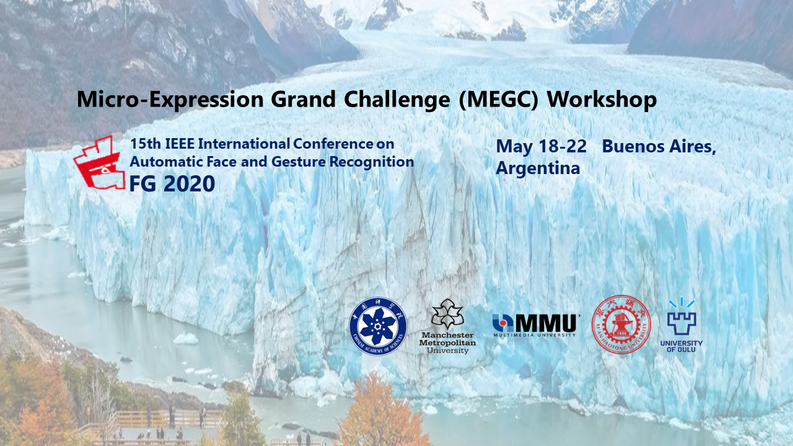

Organisers

Su-Jing Wang
Chinese Academy of Sciences, China, wangsujing@psych.ac.cn

Moi Hoon Yap
Manchester Metropolitan University,UK, m.yap@mmu.ac.uk

John See
Multimedia University, Malaysia, johnsee@mmu.edu.my

Xiaopeng Hong
Xi’an Jiaotong University, hongxiaopeng@xjtu.edu.cn

Xiaobai Li
University of Oulu,
Xiaobai.Li@oulu.fi
Program Chair

Jingting Li
Chinese Academy of Sciences, China,
lijt@psych.ac.cn
Student Volunteer
Ying He
Chinese Academy of Sciences, China
heyingyouxiang@qq.com